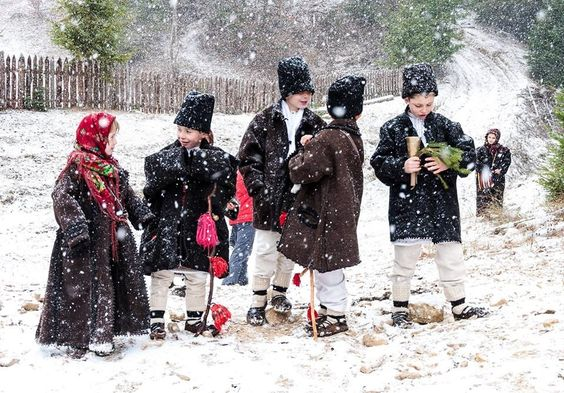
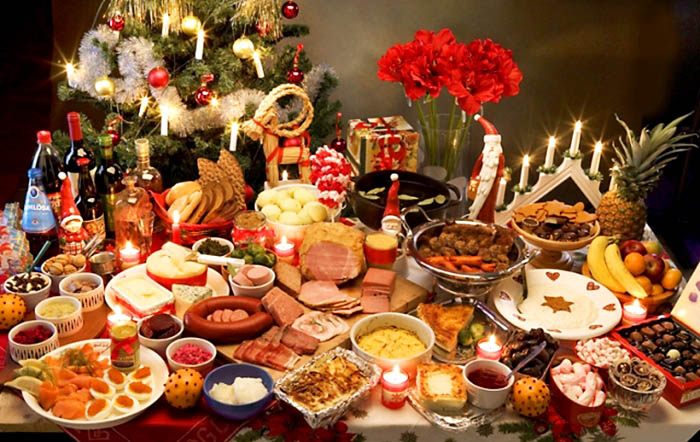

Crăciunul este una din principalele sărbători creştine. Istoria sărbătorii îşi are originea departe în secole. În această zi, creştinii din toată lumea slăvesc naşterea lui Iisus Hristos. Unii credincioşi sărbătoresc Crăciunul pe 25 decembrie, iar conform calendarului ortodox, data sărbătorii este 7 ianuarie. Indiferent de dată, toţi credincioşii aşteaptă cu nerăbdare Crăciunul. Această sărbătoare se asociază cu căldură, dragoste, bunătate, bunăstare. Fiecare popor are propriile tradiţii, dar sunt şi trăsături comune în sărbătorirea Crăciunului.
Unul din obiceiurile principale ale Crăciunului este colindatul. În mod tradiţional, la colindat merg doar bărbaţii şi flăcăii. Cu timpul însă, în cetele de colindători s-au strecurat şi fete, iar astăzi practic la colindat merg doar copiii. Prin obiceiul micuţilor de a merge cu colindul şi cu Steaua, se vesteşte Naşterea Mântuitorului. Colindele de iarnă sunt texte rituale cu conţinut religios închinate Crăciunului şi Anului Nou.
 Majoritatea colindelor încep cu formula „Steaua sus răsare” evocând astfel momentul cînd, la naşterea lui Iisus, s-a ivit pe cer steaua care i-a călăuzit pe cei trei regi magi la locul naşterii.O tradiţie veche, dar respectată cu sfinţenie la sat este „mersul cu icoana” care simbolizează un fel de colind al preoţilor care intră cu icoana Naşterii Domnului în toate casele din localitate binecuvântând astfel gospodăriile şi creştinii. Umblatul cu icoana este vestirea unei mari bucurii, fie a Naşterii Domnului, fie a Botezului Mântuitorului, când apele se sfinţesc şi întreaga natură se înnoieşte. Preoţii spun că tradiţia umblatului cu icoana reprezintă un fel de slujbă în afara zidurilor bisericii. Este o slujbă săvârşită pe uliţe şi pe străduţe.
Atunci când vorbim despre tradiţiile de Crăciun, un loc aparte îl ocupă gospodinele şi toate obiceiurile lor. Femeile coc colaci, pâine şi Crăciunei, un fel de prăjituri în formă de cifra opt neîncheiată. Aceştia sunt oferiţi colindătorilor şi puşi la icoană. În unele regiuni, Crăciuneii sunt ţinuţi la icoană până la Bobotează, iar în altele, aceştia sunt împărţiţi vitelor.
 Când te gândești la bucătăria moldovenească, nu-i așa că te gândești mai întâi la poale-n brâu, plăcinte moldovenești sau cozonac? Majoritatea bucatelor de pe masa de Crăciun sunt preparate din carne de porc, ceea ce simbolizează dorinţa de a avea un trai îmbelşugat. Tradiţional se servesc friptură şi cârnaţi de porc, sarmale, răcituri, bătute, peşte, dar şi fructe, dulciuri şi băuturi. În Moldova este atestat şi obiceiul de a mânca mămăligă în ziua de Crăciun, căreia îi sunt atribuite conotaţii magice. Pentru a pregăti astfel de bucate delicioase, puteți accesa bunica.md .